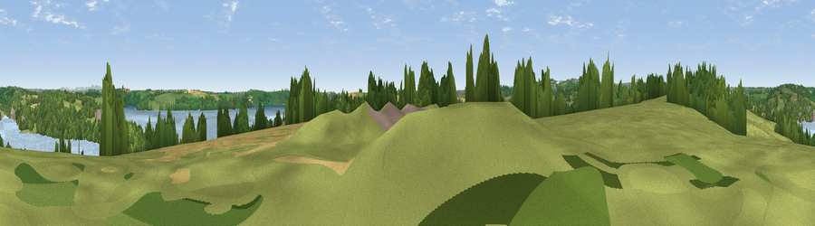

Viewpoint near Mylor Bridge
#22360 in England · top 46% of its area beats it · near Mylor BridgeThe view, rendered

A 360° render of this exact spot computed from the terrain model, tree cover and land cover — summer colours, afternoon light, calibrated against photographs of famous viewpoints. Real trees, hedges and buildings will differ in detail.
The panorama
Grey silhouette: terrain skyline in each direction (720 bearings, Earth curvature and refraction included). Dashed green: skyline with trees (+15 m) and buildings (+8 m) as obstacles. Blue strip: how far the ground is visible on each bearing.
Where the view opens
Wedge length = distance to the farthest visible ground on that bearing (vegetation-aware). Rings at 10, 25 and 50 km.
What fills the view
32% grassland · 26% woodland · 23% water · 16% cropland · 3% built-up
Angular shares of the visible panorama (visual magnitude), not map area. Landscape diversity 0.63 (0–1 Shannon).
Key numbers
More beautiful places nearby
The staircase of upgrades: each row has a higher view potential than everything closer. Driving times are estimates from straight-line distance, calibrated against real road routing — check an actual route before setting out.
| Place | Direction | Drive | Score |
|---|---|---|---|
| Viewpoint near Mylor Churchtown | SSE · 3 km | ~7 min | 60.6 |
| Viewpoint near Tremough | WSW · 6 km | ~12 min | 62.3 |
| Viewpoint near Mabe Burnthouse | WSW · 6 km | ~13 min | 71.9 |
| Viewpoint near Lanner | WNW · 10 km | ~20 min | 74.5 |
| Carn Brea | WNW · 13 km | ~24 min | 81.1 |
| St Agnes Beacon | NW · 17 km | ~29 min | 86.1 |
| Viewpoint near Foxhole | NE · 24 km | ~39 min | 86.4 |
| Viewpoint near Stenalees | NE · 28 km | ~44 min | 88.0 |
50.19137, -5.06706 · source: screening · position refined by local search. Computed location — check access rights before visiting.